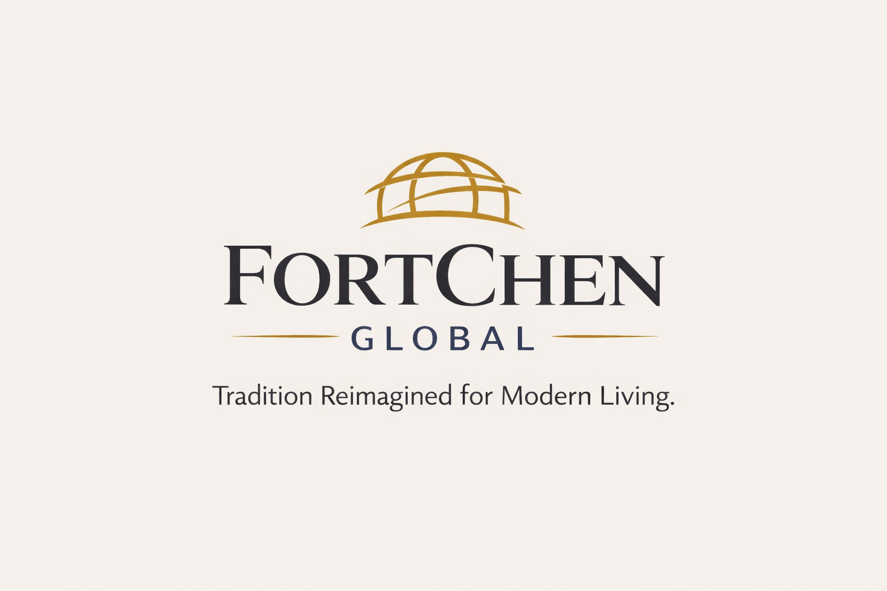

FortChen Global LLC is a U.S.-based trading and design company focused on retail products, cultural design development, and international sourcing. We specialize in clothing, accessories, home goods, vending products, and cross-border trade between the United States and Asia.
A key business direction of FortChen Global LLC is introducing Yunnan Yuanyang Yi ethnic embroidery to the U.S. market through modern product design, including fashion, bags, accessories, and jewelry.
Email: contact@fortchenglobal.com